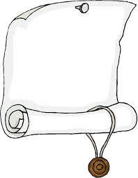

Hochzeit von
|
Am 3. Oktober 2015 um 13:30 Uhr findet die Hochzeitsmesse in der
Wallfahrtskirche Fährbrück und anschießend der Sektempfang statt.
|
 Anmeldung |
| ❁ | ❁ | ❁ |
|
Wallfahrtskirche Fährbrück Fährbrück 2 97262 Hausen bei Würzburg |
| ❁ | ❁ | ❁ |